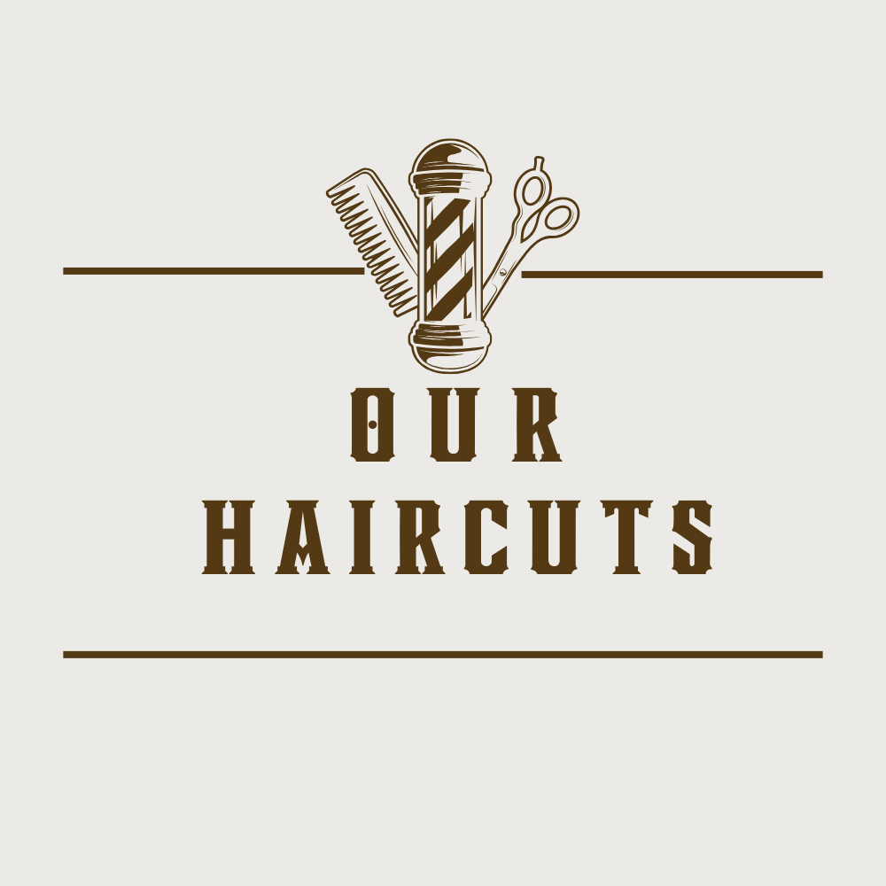
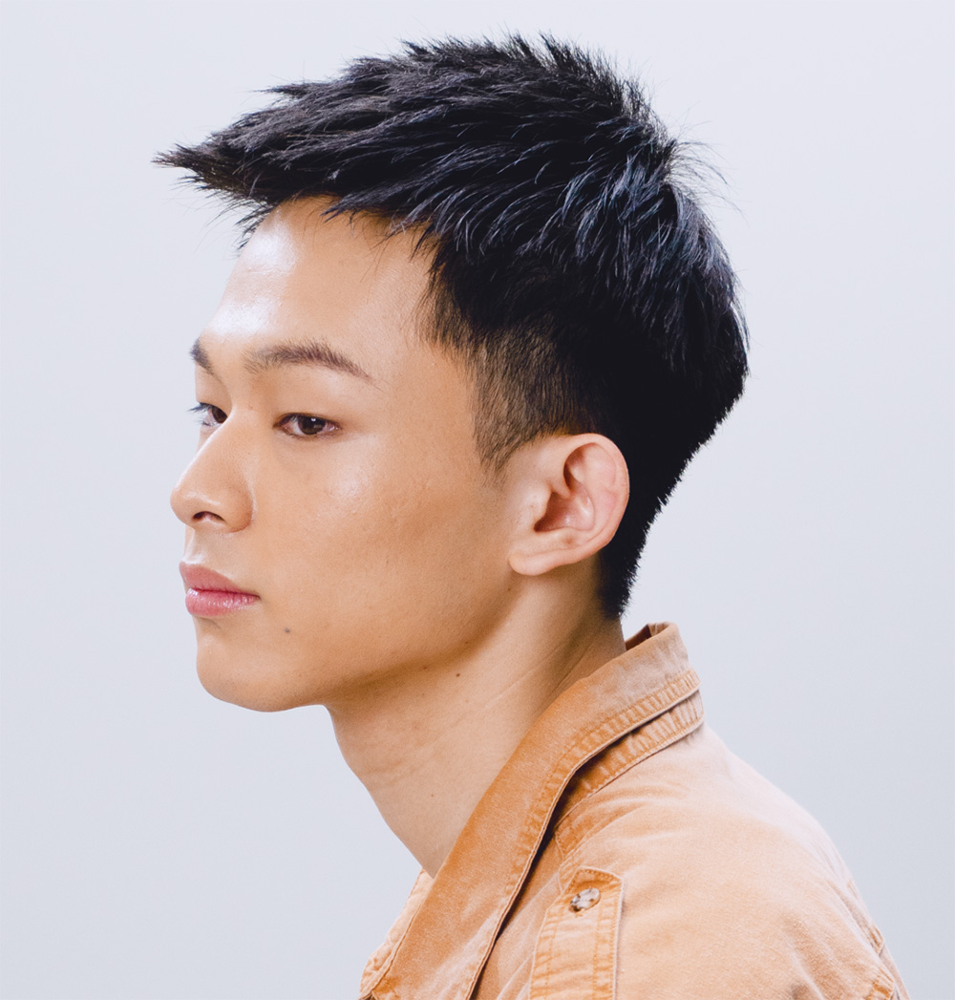

The mullet haircut, an iconic trend of the 70s and 80s, is a true testament to the daring and bold nature of the era. Short hair on the top and sides, combined with long locks in the back, created a unique and unforgettable style ranging from modest to daring.

Curtained haircut is a haircut featuring a long fringe divided in either a middle parting or a side parting, with short (or shaved) sides and back. This haircut suits both the young and old. In some cases, curtain hair is also known as “E-boy hair”, “Comma hair”, and “Korean hair”.

A French Crop is a textured, cropped style with a long fringe. The classic French Crop features a short, tapered back and sides. The top of the style is slightly longer, with a fringe that falls straight across the forehead.

The undercut hairstyle is a popular haircut for men with a modern and edgy vibe—versatile enough to be styled in many different ways, from slicked back and neat to messy and textured. It's a popular choice for men who want a fashionable and modern look that can be dressed up or down.

A buzz cut, a style of short haircut where the hair is trimmed very close to the scalp, results in a uniform length across the entire head, giving it a consistent and neat look. This haircut is celebrated for being easy to care for and maintaining a clean appearance.

The Ivy League cut, inspired by last year's Korean styles, is taking the world by storm this year. Gaining popularity in East Asia due to its adoption by Korean celebrities, this cut is a chic variation of the short barber style and resembles the classic crew cut. It's becoming a must-have for its sleek, polished look.